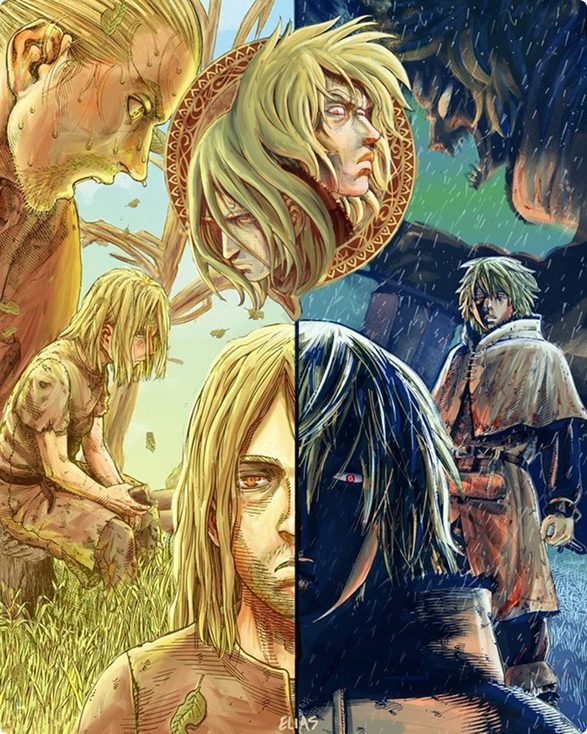

Primeira parte
Esse arco é o mais intenso em termos de ação. A história mergulha na juventude do protagonista,
quando ele é engolido por um objetivo cego: vingança. Ele vive entre guerreiros, líderes
carismáticos e batalhas que testam sua força física e mental. Mas por trás das lutas existe um
menino que foi arrancado do seu mundo e forçado a crescer num ambiente onde a violência é
glorificada.
Essa parte é sobre como o ódio pode dar propósito — mas também pode te esvaziar por dentro. As cenas
de guerra são fortes, mas o verdadeiro conflito está dentro do personagem principal, que pouco a
pouco começa a perceber que talvez esteja perdendo a si mesmo
Palavras-chave: ódio, orgulho, perda, brutalidade
Segunda parte
Aqui tudo muda. É como se o anime/mangá parasse e dissesse: "Agora que você viu o caos, vamos olhar
para as consequências". O protagonista se vê num lugar onde não pode lutar, e isso força ele a
encarar tudo o que carregava por dentro. Ele se cala, observa, sofre — e começa a entender o que
significa viver sem violência.
Essa parte é contemplativa. Cada pequeno gesto, cada conversa simples, tem peso. É sobre reconstruir
a alma após ela ter sido despedaçada. O protagonista começa a refletir sobre culpa, perdão e o que
realmente é ser livre. Muitos fãs consideram esse arco o coração da obra, onde o verdadeiro
"renascimento" acontece.
Palavras-chave: silêncio, trauma, servidão, despertar

Retrospectiva
A história começa com um garoto arrancado da infância e lançado num mundo de guerra e dor. Movido por vingança, ele mergulha no ódio, vivendo apenas para matar. O campo de batalha se torna sua casa, e o silêncio do luto, sua única companhia. Ele se fecha, endurece, e aos poucos se perde de si mesmo. Mas tudo isso desmorona. Sem propósito, ele cai no vazio. E é nesse silêncio que a segunda parte começa. Agora longe da guerra, ele vive como um escravo — física e emocionalmente. Pela primeira vez, não pode lutar, apenas lembrar. E no lembrar, começa a mudar. O ódio dá lugar à culpa. O desejo de matar, à busca por sentido. Ele passa de guerreiro a homem. De servo a alguém que escolhe não levantar a espada. A primeira parte é a destruição. A segunda, o renascimento.
Terceira parte
Com uma nova visão de mundo, o protagonista agora tem um ideal. Mas o mundo em volta dele continua
cruel e impiedoso. Esse arco mostra o conflito entre o novo caminho que ele quer trilhar e os
sistemas violentos que o cercam. Surgem personagens com visões diferentes: uns que acreditam na
força, outros na paz, e outros que vivem apenas pela ambição.
Essa parte é sobre testar convicções. É quando você diz que mudou, mas o mundo pergunta: "Você mudou
mesmo?". O protagonista não está mais sozinho, mas agora precisa lidar com o passado e com pessoas
que não querem mudar. É um arco com grandes dilemas morais, onde a paz se mostra muito mais difícil
do que a guerra.
Palavras-chave: escolha, tentação, convicção, herança
Quarta parte
Este é o sonho. A promessa de um lugar onde a violência não reina, onde um novo começo é possível.
Mas a realidade é que a paz também exige luta — uma luta diferente, feita de paciência, compreensão
e diálogo. Esse arco mostra o esforço de criar algo do zero, num ambiente hostil, onde diferentes
culturas e interesses se cruzam.
Aqui, o protagonista tenta aplicar tudo o que aprendeu. É o ápice de sua evolução — mas também é o
mais difícil. Porque não se trata mais de derrotar inimigos, mas de convencer corações. É uma parte
que fala muito sobre liderança, convivência e os limites do idealismo. É bonita, cheia de
significado e muitas vezes comovente.
Palavras-chave: construção, convivência, esperança, desafio